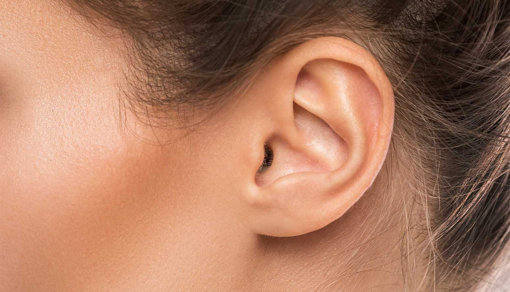

حاسة السمع
المحتويات
- المقدمة
- االعضو المسؤول عن حاسة السمع
- تركيب الأذن
- عظم حاسة السمع
- امراض ومشاكل متعلقة بالسمع
- علاج ضعف السمع
- سبل الوقايه والحفاظ على حاسة السمع
المقدمة
تمثل حاسة السمع إحدى حواس الإنسان الخمسة، والتي تساعد على تلقي المعلومات من البيئة المحيطة عبر النظام السمعي في الأذن، ويمكن تعريف حاسة السمع على أنها القدرة على تمييز وإدراك الموجات الصوتية القادمة من خارج الجسم عبر وسط بيئي مثل؛ الهواء أو السوائل أو المواد الصلبة وذلك نتيجة وصولها إلى الجهاز السمعي على شكل حركات اهتزازية، وتكمن أهمية حاسة السمع في إمكانية التواصل بين الأفراد في المجتمع والارتباط بالطبيعة.تمثل الأذن العضو المسؤول عن حاسة السمع ، وتتكون من ثلاثة أجزاء رئيسية
- الأذن الخارجية: تتكون الأذن الخارجية من صيوان الأذن وقناة الأذن، ويمثل الصيوان الجزء الظاهر من الأذن على جانبيّ الرأس والمصنوع من غضروف قوي مغطى بالجلد.
- الأذن الوسطى: تتكون الأذن الوسطى من تجويف صغير مملوء بالهواء، وثلاثة عظيمات سمعية هي؛ المطرقة، والسندان، والركاب وهن يمثلن أصغر عظمات في الجسم، بالإضافة إلى طبلة الأذن وهو الجزء الذي يفصل الأذن الخارجية عن الوسطى.
- الأذن الداخلية: تتكون الأذن الداخلية من أعضاء متناهية في الصغر وهي: القوقعة، والقنوات الهلالية.
انقر لتتعرف على تركيب الأذن :
عظم حاسة السمع
إن حاستَي السمع والإبصار لهما أهمية عظيمة بين هذه الحواس جميعًا في حياة الإنسان ، إن السمع مِن أَجَلِّ النعم وأعظمها التي امتن بها الخالق عز وجل على عباده، وقد ذكر ذلك في آيات كثيرة، جمعها العلماء في 17 آية في كتاب الله تعالى مقرونة غالبًا بنعمة البصر، ومنها قوله: ﴿ قُلْ هُوَ الَّذِي أَنْشَأَكُمْ وَجَعَلَ لَكُمُ السَّمْعَ وَالْأَبْصَارَ وَالْأَفْئِدَةَ قَلِيلًا مَا تَشْكُرُونَ ﴾ [الملك: 23] ، وقوله تعالى: ﴿ إِنَّا خَلَقْنَا الْإِنْسَانَ مِنْ نُطْفَةٍ أَمْشَاجٍ نَبْتَلِيهِ فَجَعَلْنَاهُ سَمِيعًا بَصِيرًا ﴾ [الإنسان: 2]، وقوله تعالى: ﴿ قُلْ أَرَأَيْتُمْ إِنْ أَخَذَ اللَّهُ سَمْعَكُمْ وَأَبْصَارَكُمْ ﴾ [الأنعام: 46]، وغيرها الكثير من الآيات الكريمة ويمتاز السمع عن البصر بأنه يُدرِك الصوت من جميع الجهات الستِّ عن اليمين واليسار والأمام والخلف، ومن فوق ومن تحت، وفي الظلام والنور، وفي الليل والنهار، وعلى الرغم من الموانع ، فإن السمع يصل إلى أذنك حيث كنت، وكأن السمع يغطي البيت كله، أما العين، فلا تدرك إلا من الجهة التي تنظر إليها، وكما أن السمع مستعدٌّ دومًا لاستقبال الأصوات؛ لأن الأذنينِ تبقيان دومًا مفتوحتين ومهيَّأتين للسمع، فعلى عكس العينين فلا تريان إلا عندما تكونان مفتوحتين ومن هذا الحديث اعزائي ندرك عظم هذه النعمه ويجب شكر الله عليها وايضا استخدامها فيما يرضي الله .امراض ومشاكل متعلقة بالسمع
- ضرر في الأذن الداخلية: قد تؤدي الضجة والضوضاء إلى تمزق الشعيرات والخلايا العصبية الموجودة في القوقعة. عندما تصاب هذه الخلايا بالضرر سيؤثر ذلك على وصول الإشارات الكهربائية للدماغ وبالتالي فقدان السمع. قد يصبح من الصعب عليك تمييز كلام المحادثة خلال وجود ضجيج في الخلفية، وأحيانا قد يلعب العامل الوراثي دورا في الوصول إلى هذه النتيجة. يعرف هذا النوع من فقدان السمع باسم فقدان السمع الحسي العصبي وهو حالة طبية غير قابلة للاسترجاع.
- تراكم شمع الأذن: يمكن لتراكم شمع الأذن فيها أن يؤدي إلى حجب الوصول إلى قناتها وبالتالي منع توصيل الموجات الصوتية، في هذه الحالة يكفي تنظيف شمع الأذن لاستعادة القدرة على السمع.
- التهاب في الأذن أو نمو أورام: هذه الظروف قد تنشأ بالغالب في الأذن الوسطى والخارجية، وهي للأسف قد تؤدي إلى فقدان السمع كليا.
- تمزق طبلة الأذن: أو ثقب غشاء الطبلة، وهي حالة قد تؤدي إليها انفجارات من الضوضاء المرتفعة أو التغييرات المفاجئة في ضغط الأذن وهي حالات تؤثر على القدرة على السمع.
علاج ضعف السمع
قد يكون هناك مجموعة من الخيارات العلاجية التي من شأنها أن تساعد في تحسين القدرة على السمع:
- إزالة انسداد الشمع: في حال كانت المشكلة تقتصر على الشمع المتكدس في الأذن فقد يقوم الطبيب بتخفيفه بالزيت ثم غسله وسحبه من الأذن.
- إجراءات جراحية: قد تكون الجراحة أيضا خيارا ضروريا أحيانا إن كان المريض يعاني من التهابات متكررة أو اورام حميدة صغيرة.
- أجهزة مساعدة: أحيانا قد يستهدف التلف الأذن الداخلية، الأمر الذي يجعل من الأجهزة الداعمة فعالة وجوهرية، حيث تعمل هذه الأجهزة بعد ضبطها على تعديل نغمات معينة بحسب نوع التلف
- زراعة قوقعة: في حال كان المريض يعاني من ضعف سمع حاد فقد تكون زراعة قوقعة صناعية عملية جيدة ومفيدة حيث أنها تعمل كبديل للأجزاء التالفة بدل التأثير على حجم الموجات الصوتية. عند اختيارك إجراء عملية زراعة القوقعة من المهم جدا الاستماع إلى ايجابيات ومخاطر هذه العملية.
سبل الوقايه والحفاظ على حاسة السمع
| تجنب التعرض للضوضاء والأصوات المزعجة قدر الإمكان. | ارتداء وسائل حماية الأذن مثل؛ سدادات الأذن، أو فروات الأذن، أو كليهما وذلك عند التعرض الإجباري للضوضاء سواء كان في العمل، أو الحفلات الموسيقية، أو سباقات السيارات. | الانتباه للمعدات المستخدمة بشكل يومي مثل: أنظمة الصوت الشخصية، مجفف الشعر، الأدوات المعتمدة على الطاقة، حيث أن ُ ها قد تصدر أصواتا مرتفعة تكفي للتسبب في الأذى والضرر للأذن حتى وإن لم يشعر الفرد بألم في الأذن. |
| الالتزام بتناول الأدوية العلاجية حسب توجيهات الطبيب، ومناقشة الأمور المهمة المتعلقة بالدواء معه، مع ضرورة مراجعة الطبيب فور ملاحظة أي أعراض جانبية غير طبيعية مثل؛ طنين الأذن. | التحدث مع مسؤول الصحة والسلامة المهنية في مكان العمل حول وسائل تقليل مخاطر المواد الكيميائية على الأذن. | التأكد من حصول الأطفال على اللقاحات الضرورية وفقا للبرنامج الوطني للقاحات الموجود في البلد الذي يقطن فيه الفرد. |
| تجنب تلقي الضربات والصدمات على الرأس والوقاية من اضرار تغير الضغط المفاجئ، وأخذ جميع الاحتياطات لتفادي إصابة منطقة الأذن. | ||